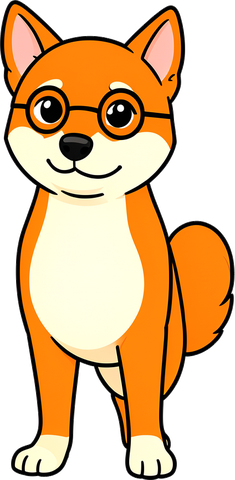

RIPASSO
Per cominciare
Prima di iniziare, scopri quanto ricordi delle elementari e della prima media. Non preoccuparti degli errori: servono a capire da dove partire.
1●Le parole si sono attaccate! Separale con una barra e riscrivi la frase.
- Lucemangiaunbiscottoalcioccolato.
- OggiVladspiegalagrammaticaaicompagni.
- L'Etnafumapianopianosopraimuliditaormina.
2●Cerchia i nomi: indicano persone, animali, cose, luoghi o idee.
✎CFC-1
- Il gelato al pistacchio di Bronte piace molto alla nonna.
- Luce dorme sul divano accanto al tablet di Vlad.
- A Taormina il teatro antico guarda il mare e il vulcano.
risposte esatte / 12
3●●In ogni gruppo c'è un intruso: una parola che fa un lavoro diverso dalle altre. Cancellala.
✎CFC-2
- cane · lavagna · corre · amicizia
- verde · allegro · Sicilia · piccolo
- il · una · lo · sotto
- gioca · scrive · bello · dorme
- ieri · sempre · lentamente · tavolo
- e · ma · però · con
risposte esatte / 6

LuceIo conosco tutte le parole: «pappa», «biscotto», «crocchette»…
VladSono tutte nomi, Luce! Ma in una frase servono anche parole che fanno altri lavori. Andiamo a scoprirli.

1 · Le parti del discorso8